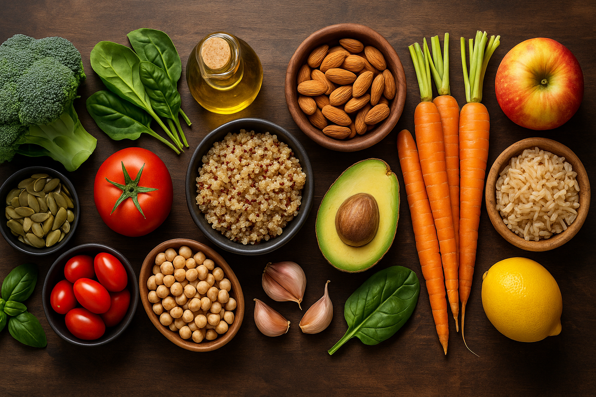

Phase focus
Generate a roadmap in My Plan to unlock phase-specific nutrition guidance.

Balanced macros, budget-friendly recipes, Pantry mode, and a simple planner powered by your My Plan targets.
Loading your saved FreeFitFuel My Plan targets.
Generate a roadmap in My Plan to unlock phase-specific nutrition guidance.
Hit protein first, then make carbs and fats fit the phase target from My Plan.
Protein rebuilds muscle; carbs fuel effort; fats support hormones and vitamins.
Hydration is now taken from My Plan where available, rather than recalculated on this page.
Four everyday habits that make the biggest difference for health, energy, and strength.
Fuel your body with whole foods: lean proteins, slow-digesting carbs, healthy fats, fruit and veg. This supports steady energy, stronger muscles, and lowers the risk of long-term conditions.
Mix strength training with aerobic activity. Exercise improves insulin sensitivity, heart health, and helps your body feel more energetic day-to-day.
Quality rest reduces fatigue, sharpens focus, and helps muscles grow. Aim for 7–9 hours of consistent sleep and take rest days to recover fully.
A calmer mind supports a stronger body. When stress is high, hormones that affect energy, appetite and weight can quickly fall out of balance. By lowering tension, you give your body the space to recover and perform at its best.
Stress relief isn’t one-size-fits-all. Some people unwind through photography or art, others find peace in gardening, meditation, or mindful movement like yoga, stretching for flexibility, Tai Chi, or Qi Gong. Even a gentle walk in nature can reset your mood and reduce strain on your body.
Find the practice that works for you. Lower stress, lift energy, and make every workout count.
Supporting your training doesn’t just mean sets and reps — it also means guidance for when things go wrong.
Common injuries like plantar fasciitis, calf strains, tennis elbow or low back pain can derail your progress. Our Physio & Recovery page gives you safe, practical progressions: Acute → Rebuild → Return.
Open Physio & Recovery
The content on FreeFitFuel™ is for general fitness education only and isn’t a substitute for personalised medical advice. Consult a qualified professional before starting a new programme, especially if you have any health conditions or injuries. Stop any exercise that causes sharp pain, dizziness, chest pain, or unusual shortness of breath.